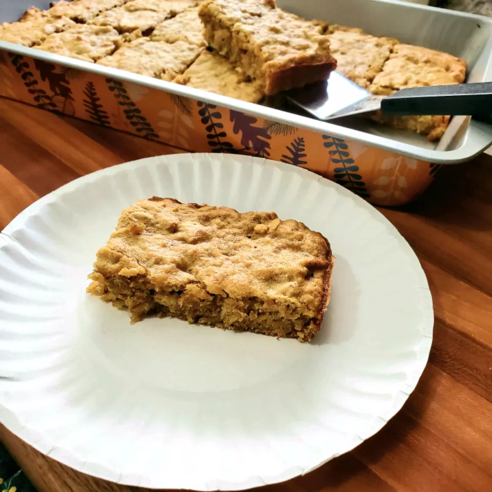

Banana Wake-Up Bars

These are soft, simple, but delicious, bars made with yummy ingredients. They're always a big hit when I make them for my friends and bring them to school.
Ingredients
- ⅓ cup peanut butter
- ⅓ cup brown sugar
- 2 ½ tablespoons butter
- 1 egg
- ½ teaspoon vanilla extract
- 1 ripe banana, mashed
- ⅔ cup rolled oats
- ⅓ cup all-purpose flour
- 2 tablespoons wheat germ
- ¼ teaspoon baking soda
Steps:
- Preheat oven to 350 degrees F (175 degrees C). Grease a 9x9-inch baking pan.
- n a mixing bowl, beat together the peanut butter, brown sugar, and butter with an electric mixer until smooth and fluffy. Beat in the egg and vanilla extract, then the banana. Stir in the oats, flour, wheat germ, and baking soda until completely combined. Spread in prepared baking pan.
- Bake in the preheated oven until set and lightly browned, 20 to 25 minutes. Remove from oven and cool in pan on wire rack before cutting into bars.